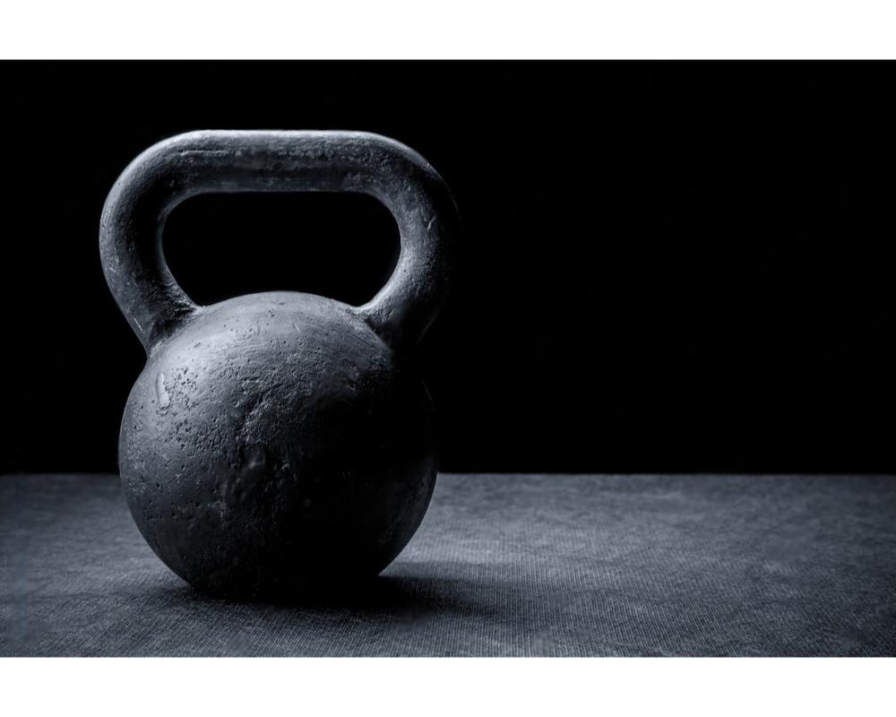
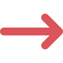

elektriniai paspirtukai | galingi elektriniai paspirtukai | vokiski elektriniai paspirtukai | elektriniai paspirtukai vaikams | elektriniai paspirtukai su sedyne | sunkioji atletika | masazinis volas | masaziniai volai | volas nugarai | volas | pusiausvyros platforma | balansine platforma | balansine lenta | balansine lenta vaikams | sportines grindu dangos | sporto sales danga | sportines dangos | lauko gumine danga | gumine danga | jegos treniruokliai | sporto treniruokliai | sporto inventorius namams | treniruokliai | matavimo prietaisai | chronometrai | laikmatis | elektroninis laikmatis | chronometras laikrodis | sirdies ritmo matuokliai | sirdies ritmo dirzas | pulso matuoklis sportui | sirdies ritmo matuoklis sportui
GeleziesSportas.lt – platus sporto ir aktyvaus laisvalaikio prekių pasirinkimas. Siūlome galingus ir kokybiškus elektrinius paspirtukus vaikams ir suaugusiems, įskaitant vokiškus modelius ir paspirtukus su sėdyne. Raskite puikų sporto inventorių namams: sunkiosios atletikos įranga, masažiniai volai nugarai, balansinės platformos, treniruokliai ir dar daugiau. Mūsų sportinės dangos ir lauko guminės dangos puikiai tinka sporto salėms ir lauko erdvėms. Taip pat rasite laikmačius, chronometrus bei širdies ritmo matuoklius sportui. Sportuokite su GeleziesSportas.lt – kokybė ir patikimumas!
PREKINTIS
sunkioji atletika
GeleziesSportas.lt – Jūsų Partneris Sunkiojoje Atletikoje
Sunkioji atletika yra ne tik sportas – tai gyvenimo būdas, reikalaujantis atsidavimo, drausmės ir tinkamos įrangos. Nesvarbu, ar esate profesionalas, siekiantis naujų aukštumų, ar pradedantysis, ieškantis kokybiškos įrangos, GeleziesSportas.lt – tai vieta, kur rasite viską, ko reikia jūsų treniruotėms ir tobulėjimui.
elektroninis laikmatis
GeleziesSportas.lt: Tikslumas ir Patikimumas Jūsų Sporto Rezultatuose
Sportiniai laikrodžiai ir chronometrai – būtina kiekvieno sportininko įranga. Nesvarbu, ar esate profesionalas, siekiantis pagerinti asmeninius rekordus, ar mėgėjas, trokštantis išlaikyti aktyvų gyvenimo būdą, tikslus laiko stebėjimas yra esminis jūsų pažangai. GeleziesSportas.lt siūlo platų aukštos kokybės sportinių laikmačių ir chronometrų asortimentą, atitinkantį įvairius poreikius.
lauko gumine danga
Kodėl Rinktis GeleziesSportas.lt sportines dangas?
Sporto salės ir aikštelės reikalauja specialių sprendimų, kurie užtikrintų saugumą, komfortą ir ilgaamžiškumą. GeleziesSportas.lt – tai patikimas partneris, teikiantis aukščiausios kokybės sportines dangas Lietuvoje. Mes siūlome platų asortimentą sprendimų, tinkamų tiek vidinėms, tiek išorinėms sporto aikštelėms.
elektriniai paspirtukai su sedyne
Elektriniai paspirtukai – Jūsų kelias į patogų ir ekologišką judėjimą su GeleziesSportas.lt
Šiuolaikinis gyvenimas nuolat skuba, todėl mums svarbu turėti patikimą ir patogų transportą, kuris ne tik taupytų laiką, bet ir būtų ekologiškas. GeleziesSportas.lt siūlo platų elektrinių paspirtukų pasirinkimą, kurie atitiks kiekvieno poreikius – nuo vaikų iki suaugusiųjų, nuo pradedančiųjų iki tikrų entuziastų.
Ar turite klausimų dėl mūsų produktų, pristatymo proceso ar mokėjimo būdų?
Adresas:
Kaltanėnų g. 54, Švenčionėliai,
18209, Lietuva